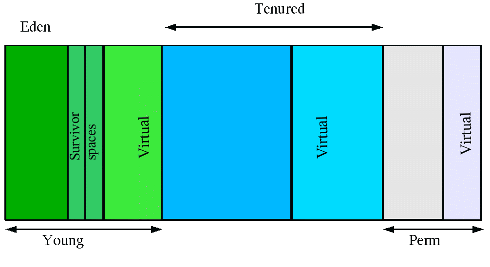
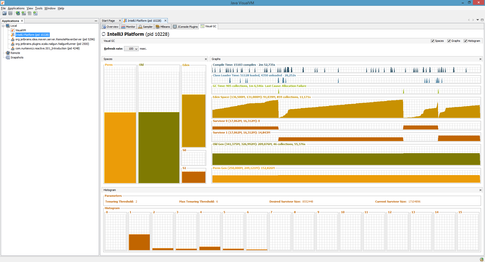
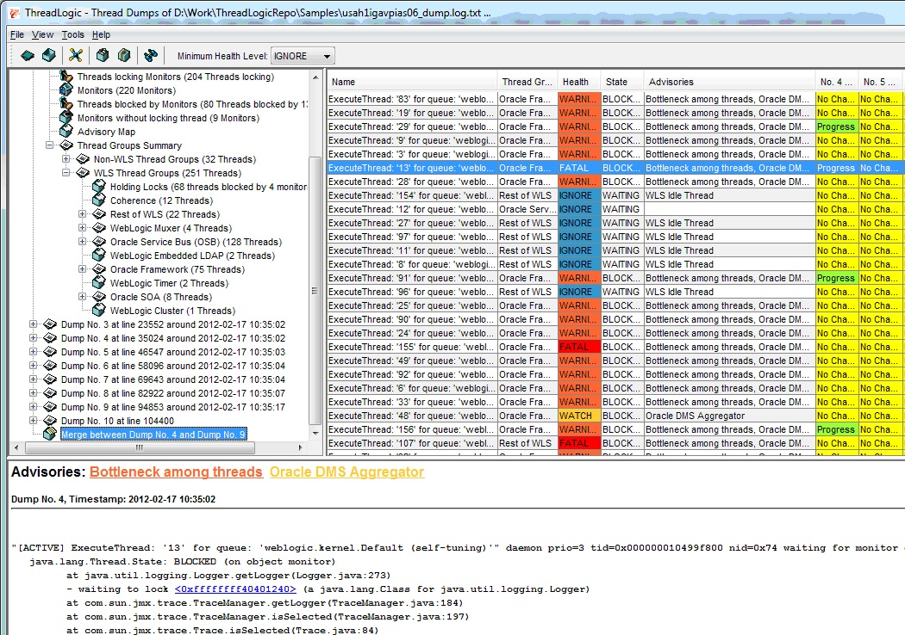

Monitoring Java applications
Tomasz Nurkiewicz
nurkiewicz.com | @tnurkiewicz
System.out.println("I'm here!");
catch(Exception e) {
// TODO Auto-generated catch block
e.printStackTrace();
}
System.out.println()- Log4J
java.util.logging- commons-logging
- SLF4J
- Logback
Why library?
- Centralized configuration
- Declarative disabling and tuning
- Logging to console, file, e-mail, socket... for free
- Better API
- More context (thread, class, time)
SLF4J
class MyClass extends MyParent {
private static final Logger log = LoggerFactory.getLogger(MyClass.class);
}
Groovy
@Slf4j
class MyClass extends MyParent {}
scala-logging
class MyClass extends MyParent with Logging
Usage
log.info("I'm here");
log.trace("Items found {} in {}ms", items, time);
log.error("Can't load image {}", fileName, exception);
Result
18:23:44.586 | INFO | Thread-1 | c.n.Main | I'm here
18:23:44.589 | TRACE | Thread-1 | c.n.Main | Items found [1, 2, 3] in 42ms
18:23:44.594 | ERROR | Thread-1 | c.n.Main | Can't load image lena.jpg
java.io.FileNotFoundException: lena.jpg (No such file or directory)
at java.io.FileInputStream.open(Native Method) ~[na:1.8.0_05]
at java.io.FileInputStream.(FileInputStream.java:131) ~[na:1.8.0_05]
at java.io.FileInputStream.(FileInputStream.java:87) ~[na:1.8.0_05]
at com.nurkiewicz.Main.main(Main.java:27) ~[my-app-1.0.jar/:na]
SLF4J: pom.xml
org.slf4j
slf4j-api
1.7.7
SLF4J: fail
SLF4J: Failed to load class "org.slf4j.impl.StaticLoggerBinder".
SLF4J: Defaulting to no-operation (NOP) logger implementation
SLF4J: See http://www.slf4j.org/codes.html#StaticLoggerBinder for further details.
Logback
ch.qos.logback
logback-classic
1.1.2
Transitively includes SLF4J
Log4J 1.2.x?
- 2012-05-06 - 1.2.17
- 2010-04-06 - 1.2.16
- 2007-08-24 - 1.2.15
- 2006-09-18 - 1.2.14
- 2005-12-04 - 1.2.13
Log4J 2.x?
Not yet released
- (like Logback) API Separation
- (like Logback) Support for multiple APIs
- (like Logback) Automatic Reloading of Configurations
- (like Logback) Advanced Filtering
- (like Logback) Property Support
- Improved Performance (LMAX Disruptor (!))
- Plugin Architecture
Using Log4J 1.2.x
log4j
log4j
1.2.17
org.slf4j
slf4j-log4j12
1.7.7
Always exactly one
SLF4J: Class path contains multiple SLF4J bindings.
SLF4J: Found binding in [jar:file:/org/slf4j/slf4j-log4j12/1.7.7/slf4j-log4j12-1.7.7.jar!/org/slf4j/impl/StaticLoggerBinder.class]
SLF4J: Found binding in [jar:file:/ch/qos/logback/logback-classic/1.1.2/logback-classic-1.1.2.jar!/org/slf4j/impl/StaticLoggerBinder.class]
SLF4J: See http://www.slf4j.org/codes.html#multiple_bindings for an explanation.
SLF4J: Actual binding is of type [org.slf4j.impl.Log4jLoggerFactory]
Bridges

Minimal logback.xml
%d{HH:mm:ss.SSS} | %-5level | %thread | %logger{1} | %m%n%rEx
See also: logback.qos.ch/manual/layouts.html
Roll your files
application.log
application.%d{yyyy-MM-dd}.log.zip
7
%d{HH:mm:ss.SSS} | %-5level | %thread | %logger{1} | %m%n%rEx
See also: logback.qos.ch/manual/appenders.html
Avoid %L, %M, %C, %F
[...] its use should be avoided unless execution speed is not an issue.
Logging levels
ERROR- Really bad, needs interventionWARN- Might be a problemINFO- Standard loggingDEBUG- Used during developmentTRACE- Low level, never on production
Reloading at runtime
java -Dlogback.configurationFile=/path/to/my-logback.xml
In my-logback.xml
...
Parsing 101
tail -f application.log | grep ERROR | cut -d'|' -f1,4-5
Also learn: zgrep, sed, awk, less, sort, uniq -c
Quick charting: gnuplot, R, Excel...
Example:
18:23:44.586 | INFO | Thread-1 | c.n.Main | I'm here
Tools...
Flume | Graylog2 | IBM Log Analysis | Lilith | Logalyze | Logentries | Loggly | Logrhythm | logstash | nxlog | Papertrail | Scalyr | Scribe | Splunk | Sumo logic | ...
Context
log.debug("Got request");
vs.
log.debug("Request to {} from {}",
req.getParameter("id"), req.getRemoteUser());
Also: running time, external input
Context cont.
switch (code) {
case "yes": flag = true;
case "no": flag = false;
default:
log.warn("Can't recognize");
}
MDC
- Thread-local map
MDC.put("user", "tomek")- Accessible in every log statement
- Remember to clean it
%d{HH:mm:ss.SSS} | %-5level | %X{user} | %thread | %logger{1} | %m%n%rEx
MDC example in Spring Security
public class UserNameFilter implements Filter {
@Override
public void doFilter(ServletRequest req, ServletResponse resp, FilterChain chain) {
final Authentication authentication =
SecurityContextHolder.getContext().getAuthentication();
MDC.put("user", authentication.getName());
try {
chain.doFilter(req, resp);
} finally {
MDC.remove("user");
}
}
//...
}
Garbage collector and memory
-XX:+PrintGCDetails
-XX:+PrintGCTimeStamps
-Xloggc:gc.log
-XX:+UseGCLogFileRotation
-XX:NumberOfGCLogFiles=10
-XX:GCLogFileSize=100M
-XX:+HeapDumpOnOutOfMemoryError
-XX:HeapDumpPath=/tmp
See also: docs.oracle.com/javase/8/docs/technotes/tools/unix/java.html, stackoverflow.com/questions/3822097
GC in 2 minutes
From: www.oracle.com/technetwork/java/javase/gc-tuning-6-140523.html
Young generation GC

From: javaeesupportpatterns.blogspot.com/2011/10/verbosegc-output-tutorial-java-7.html
Old generation GC

From: javaeesupportpatterns.blogspot.com/2011/10/verbosegc-output-tutorial-java-7.html
JVisualVM + VisualGC
Other GC analysis tools
jps, jinfo
$ jps -ml
...
11028 com.nurkiewicz.MyMain
...
$ jinfo -flag PrintGCDetails 11028
-XX:-PrintGCDetails
$ jinfo -flag +PrintGCDetails 11028
$ jinfo -flag PrintGCDetails 11028
-XX:+PrintGCDetails
Name your threads!
import com.google.common.util.concurrent.ThreadFactoryBuilder;
ThreadFactory threadFactory = new ThreadFactoryBuilder()
.setNameFormat("My-pool-%d")
.setDaemon(true)
.build();
ExecutorService myPool = Executors.newFixedThreadPool(10, threadFactory);
Thread thread = new Thread(runnable, "My-unique-thread");
Exceptions
log.error("" + e); //A
log.error(e.toString()); //B
log.error(e.getMessage()); //C
log.error("", e); //D
log.error("Error: " + e); //E
log.error("Error: " + e.getMessage()); //F
log.error("Error", e); //G
Wrapping exceptions
try {
try {
final FileInputStream file = new FileInputStream("file.txt");
} catch (FileNotFoundException e) {
throw new RuntimeException("I/O error", e);
}
} catch (Exception e) {
log.error("Houston, we've had a problem", e);
}
Where is the cause?
ERROR | main | c.n.Main | Houston, we've had a problem
java.lang.RuntimeException: I/O error
at com.nurkiewicz.Main.main(Main.java:18) ~[test-classes/:na]
at sun.reflect.NativeMethodAccessorImpl.invoke0(Native Method) ~[na:1.8.0_05]
at sun.reflect.NativeMethodAccessorImpl.invoke(NativeMethodAccessorImpl.java:62) ~[na:1.8.0_05]
at sun.reflect.DelegatingMethodAccessorImpl.invoke(DelegatingMethodAccessorImpl.java:43) ~[na:1.8.0_05]
at java.lang.reflect.Method.invoke(Method.java:483) ~[na:1.8.0_05]
at com.intellij.rt.execution.application.AppMain.main(AppMain.java:134) [idea_rt.jar:na]
Caused by: java.io.FileNotFoundException: file.txt (Permission denied)
at java.io.FileInputStream.open(Native Method) ~[na:1.8.0_05]
at java.io.FileInputStream.(FileInputStream.java:131) ~[na:1.8.0_05]
at java.io.FileInputStream.(FileInputStream.java:87) ~[na:1.8.0_05]
at com.nurkiewicz.Main.main(Main.java:16) ~[test-classes/:na]
... 5 common frames omitted
Real life example

Real life example explained

%rEx - root cause first
ERROR | main | c.n.Main | Houston, we've had a problem
java.io.FileNotFoundException: file.txt (Permission denied)
at java.io.FileInputStream.open(Native Method) ~[na:1.8.0_05]
at java.io.FileInputStream.(FileInputStream.java:131) ~[na:1.8.0_05]
at java.io.FileInputStream.(FileInputStream.java:87) ~[na:1.8.0_05]
at com.nurkiewicz.Main.main(Main.java:16) ~[test-classes/:na]
... 5 common frames omitted
Wrapped by: java.lang.RuntimeException: I/O error
at com.nurkiewicz.Main.main(Main.java:18) ~[test-classes/:na]
Real life example with %rEx

Thread dumps - how?
jstack <PID>kill -3 <PID>- JVisualVM -> Threads -> Thread Dump
- JMX via
ThreadMXBean Thread.getAllStackTraces()- In IDE
threadlogic
Download: java.net/projects/threadlogic
Source: allthingsmdw.blogspot.com/2012/03/threadlogic-version-095-available.html
Everything is there!

Source: ptrthomas.wordpress.com/2006/06/06/java-call-stack-from-http-upto-jdbc-as-a-picture/
Idle thread pool
"pool-1-thread-8" #19 prio=5 os_prio=0 tid=0x000000001a4fe000 nid=0x1320 waiting on condition [0x000000001b5be000]
java.lang.Thread.State: WAITING (parking)
at sun.misc.Unsafe.park(Native Method)
- parking to wait for <0x0000000084a17688> (a java.util.concurrent.locks.AbstractQueuedSynchronizer$ConditionObject)
at java.util.concurrent.locks.LockSupport.park(LockSupport.java:175)
at java.util.concurrent.locks.AbstractQueuedSynchronizer$ConditionObject.await(AbstractQueuedSynchronizer.java:2039)
at java.util.concurrent.LinkedBlockingQueue.take(LinkedBlockingQueue.java:442)
at java.util.concurrent.ThreadPoolExecutor.getTask(ThreadPoolExecutor.java:1067)
at java.util.concurrent.ThreadPoolExecutor.runWorker(ThreadPoolExecutor.java:1127)
at java.util.concurrent.ThreadPoolExecutor$Worker.run(ThreadPoolExecutor.java:617)
at java.lang.Thread.run(Thread.java:745)
Busy thread
"main" #1 prio=5 os_prio=0 tid=0x00000000021f3800 nid=0x2d28 runnable [0x000000000216e000]
java.lang.Thread.State: RUNNABLE
at sun.security.provider.SHA2.implDigest(SHA2.java:102)
at sun.security.provider.DigestBase.engineDigest(DigestBase.java:173)
at sun.security.provider.DigestBase.engineDigest(DigestBase.java:152)
at java.security.MessageDigest$Delegate.engineDigest(MessageDigest.java:576)
at java.security.MessageDigest.digest(MessageDigest.java:353)
at java.security.MessageDigest.digest(MessageDigest.java:399)
at org.apache.commons.codec.digest.DigestUtils.sha256(DigestUtils.java:277)
at org.apache.commons.codec.digest.DigestUtils.sha256(DigestUtils.java:309)
at com.nurkiewicz.Main.main(Main.java:11)
Sleeping thread
"pool-1-thread-9" #20 prio=5 os_prio=0 tid=0x00000000193cc800 nid=0x2dec waiting on condition [0x000000001a80e000]
java.lang.Thread.State: TIMED_WAITING (sleeping)
at java.lang.Thread.sleep(Native Method)
at java.lang.Thread.sleep(Thread.java:340)
at java.util.concurrent.TimeUnit.sleep(TimeUnit.java:386)
at com.nurkiewicz.Main.sleeping(Main.java:19)
- locked <0x0000000084d79280> (a java.lang.Class for com.nurkiewicz.Main)
at com.nurkiewicz.Main.access$100(Main.java:7)
at com.nurkiewicz.Main$MyRunnable.run(Main.java:28)
at java.util.concurrent.Executors$RunnableAdapter.call(Executors.java:511)
at java.util.concurrent.FutureTask.run(FutureTask.java:266)
at java.util.concurrent.ThreadPoolExecutor.runWorker(ThreadPoolExecutor.java:1142)
at java.util.concurrent.ThreadPoolExecutor$Worker.run(ThreadPoolExecutor.java:617)
at java.lang.Thread.run(Thread.java:745)
Blocked thread
"pool-1-thread-8" #19 prio=5 os_prio=0 tid=0x00000000193cc000 nid=0x1b3c waiting for monitor entry [0x000000001a60f000]
java.lang.Thread.State: BLOCKED (on object monitor)
at com.nurkiewicz.Main.sync(Main.java:19)
- waiting to lock <0x0000000084d79280> (a java.lang.Class for com.nurkiewicz.Main)
at com.nurkiewicz.Main.access$100(Main.java:7)
at com.nurkiewicz.Main$MyRunnable.run(Main.java:28)
at java.util.concurrent.Executors$RunnableAdapter.call(Executors.java:511)
at java.util.concurrent.FutureTask.run(FutureTask.java:266)
at java.util.concurrent.ThreadPoolExecutor.runWorker(ThreadPoolExecutor.java:1142)
at java.util.concurrent.ThreadPoolExecutor$Worker.run(ThreadPoolExecutor.java:617)
at java.lang.Thread.run(Thread.java:745)
Waiting on ReentrantLock
"pool-1-thread-8" #19 prio=5 os_prio=0 tid=0x000000001a294000 nid=0x2af4 waiting on condition [0x000000001b77e000]
java.lang.Thread.State: WAITING (parking)
at sun.misc.Unsafe.park(Native Method)
- parking to wait for <0x00000000d7608010> (a java.util.concurrent.locks.ReentrantLock$NonfairSync)
at java.util.concurrent.locks.LockSupport.park(LockSupport.java:175)
at java.util.concurrent.locks.AbstractQueuedSynchronizer.parkAndCheckInterrupt(AbstractQueuedSynchronizer.java:836)
at java.util.concurrent.locks.AbstractQueuedSynchronizer.acquireQueued(AbstractQueuedSynchronizer.java:870)
at java.util.concurrent.locks.AbstractQueuedSynchronizer.acquire(AbstractQueuedSynchronizer.java:1199)
at java.util.concurrent.locks.ReentrantLock$NonfairSync.lock(ReentrantLock.java:209)
at java.util.concurrent.locks.ReentrantLock.lock(ReentrantLock.java:285)
at com.nurkiewicz.Main$1.run(Main.java:28)
Deadlock
Found one Java-level deadlock:
=============================
"pool-1-thread-2":
waiting for ownable synchronizer 0x0000000085064d38, (a java.util.concurrent.locks.ReentrantLock$NonfairSync),
which is held by "pool-1-thread-1"
"pool-1-thread-1":
waiting for ownable synchronizer 0x0000000085065040, (a java.util.concurrent.locks.ReentrantLock$NonfairSync),
which is held by "pool-1-thread-2"
Java stack information for the threads listed above:
===================================================
"pool-1-thread-2":
at sun.misc.Unsafe.park(Native Method)
- parking to wait for <0x0000000085064d38> (a java.util.concurrent.locks.ReentrantLock$NonfairSync)
...
"pool-1-thread-1":
at sun.misc.Unsafe.park(Native Method)
- parking to wait for <0x0000000085065040> (a java.util.concurrent.locks.ReentrantLock$NonfairSync)
...
Slow database query
"http-0.0.0.0-8443-102" daemon prio=3 tid=0x022a6400 nid=0x1bd runnable [0x78efb000]
java.lang.Thread.State: RUNNABLE
at java.net.SocketInputStream.socketRead0(Native Method)
at java.net.SocketInputStream.read(SocketInputStream.java:129)
...
at com.mysql.jdbc.MysqlIO.getResultSet(MysqlIO.java:379)
at com.mysql.jdbc.MysqlIO.readResultsForQueryOrUpdate(MysqlIO.java:1970)
at com.mysql.jdbc.MysqlIO.readAllResults(MysqlIO.java:1387)
...
at org.apache.commons.dbcp.DelegatingPreparedStatement.executeQuery(DelegatingPreparedStatement.java:96)
at org.apache.commons.dbcp.DelegatingPreparedStatement.executeQuery(DelegatingPreparedStatement.java:96)
Puzzle
"http-0.0.0.0-8443-102" daemon prio=3 tid=0x022a6400 nid=0x1bd runnable [0x78efb000]
java.lang.Thread.State: RUNNABLE
at java.net.SocketInputStream.socketRead0(Native Method)
at java.net.SocketInputStream.read(SocketInputStream.java:129)
...
at java.io.BufferedInputStream.read(BufferedInputStream.java:317)
at sun.net.www.http.HttpClient.parseHTTPHeader(HttpClient.java:687)
at sun.net.www.protocol.http.HttpURLConnection.getInputStream(HttpURLConnection.java:1072)
at java.net.HttpURLConnection.getResponseCode(HttpURLConnection.java:373)
at sun.net.www.protocol.https.HttpsURLConnectionImpl.getResponseCode(HttpsURLConnectionImpl.java:318)
...
at com.nurkiewicz.AuthServlet.doPost(AuthServlet.java:67)
at javax.servlet.http.HttpServlet.service(HttpServlet.java:802)
Log4J case study
final ExecutorService pool = Executors.newFixedThreadPool(100);
for (int i = 0; i < 100_000_000; i++) {
pool.submit(() -> log.debug("Here"));
}
Bottleneck
"pool-1-thread-4" #15 prio=5 os_prio=0 tid=0x000000001a814000 nid=0x2a68 waiting for monitor entry [0x000000001b40f000]
java.lang.Thread.State: BLOCKED (on object monitor)
at org.apache.log4j.Category.callAppenders(Category.java:204)
- waiting to lock <0x0000000084c34ff0> (a org.apache.log4j.spi.RootLogger)
at org.apache.log4j.Category.forcedLog(Category.java:391)
at org.apache.log4j.Category.log(Category.java:856)
at org.slf4j.impl.Log4jLoggerAdapter.debug(Log4jLoggerAdapter.java:209)
at com.nurkiewicz.Main$1.run(Main.java:25)
...
Stack trace examination
"pool-1-thread-5" #16 prio=5 os_prio=0 tid=0x000000001a814800 nid=0x1560 runnable [0x000000001b50e000]
java.lang.Thread.State: RUNNABLE
at java.lang.Throwable.getStackTraceElement(Native Method)
at java.lang.Throwable.getOurStackTrace(Throwable.java:827)
- locked <0x00000000d6e91b80> (a java.lang.Throwable)
at java.lang.Throwable.getStackTrace(Throwable.java:816)
...
at java.lang.reflect.Method.invoke(Method.java:483)
at org.apache.log4j.spi.LoggingEvent.getLocationInformation(LoggingEvent.java:253)
...
- locked <0x0000000084c335e8> (a org.apache.log4j.ConsoleAppender)
at org.apache.log4j.helpers.AppenderAttachableImpl.appendLoopOnAppenders(AppenderAttachableImpl.java:66)
at org.apache.log4j.Category.callAppenders(Category.java:206)
- locked <0x0000000084c34ff0> (a org.apache.log4j.spi.RootLogger)
at org.apache.log4j.Category.forcedLog(Category.java:391)
...
Thread vs. CPU
$ top -n1 -H
25938 tomek 20 0 1360m 748m 31m S 2 24.8 0:15.15 java
25938 == 0x6552
"Thread-10" prio=10 tid=0x7f3bf800 nid=0x6552 runnable [0x7f25c000]
java.lang.Thread.State: RUNNABLE
at java.util.regex.Pattern$Node.study(Pattern.java:3010)
...
From: www.nurkiewicz.com/2012/08/which-java-thread-consumes-my-cpu.html
Operating system - Linux